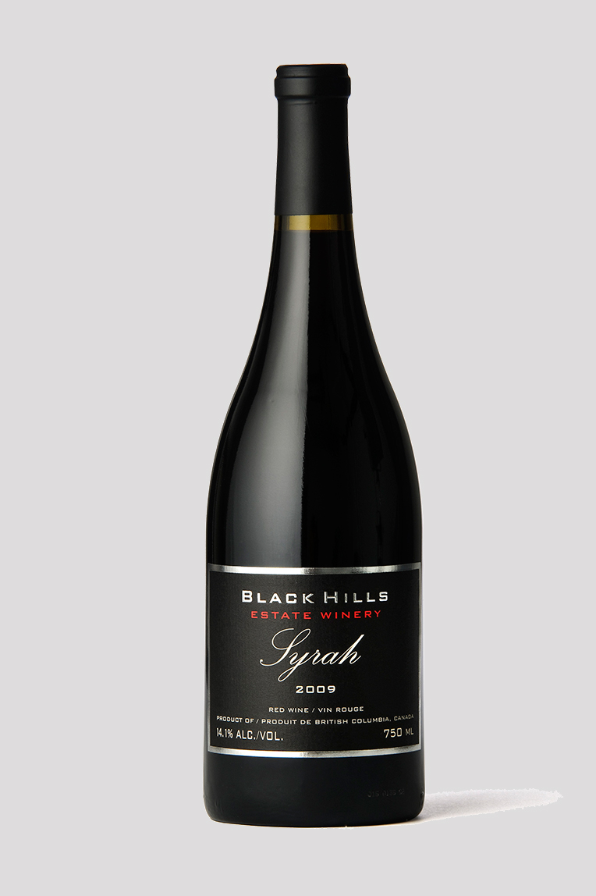
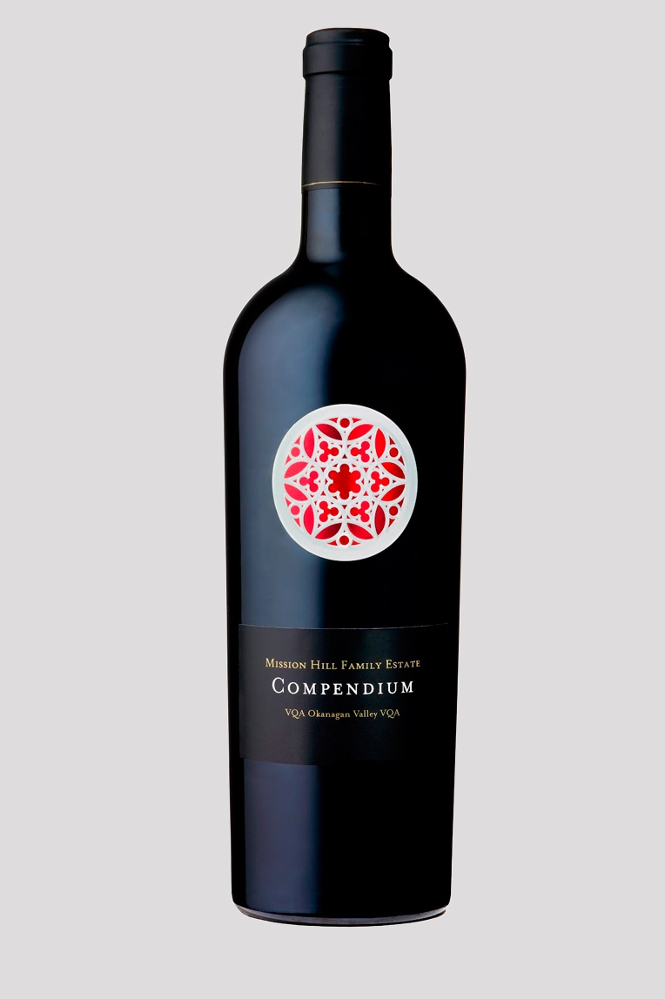

<div class="content">

		{% include slider_navigation.html %}

	<div class='winery_hero_banner content_wrap'>
		{% include contact_slide.html %}
	</div>

	<div class="wines_control clearfix">
		<div class='content_wrap'>
			<div class='collections'>
				<a class="collections">COLLECTIONS &#x2228;</a>
			</div>
			
					<div class='view'>
				<a class="collections">VIEW: GRID | BANNER</a>
			</div>
		</div>
	</div>

	<div class='detail_collection clearfix'>
		<h2>Collection: Summer Reds</h2>
			<p> Black Grape Winery is world class facility that will give our guests an exceptional sit down tasting experience immersed in the middle of the Black Hills terroir. The spectacular 3000 sq foot tasting area and wine shop is located on the Black Sage Road, just a few hundred yards further south from its original location. The new site has great views of the valley and is surrounded by vineyards on all sides.</p>
	</div>
	<div class="maincontainer products clearfix">
		<div class='grid_item'>
		
		</div>
			<div class='grid_item'>
		
		</div>
	</div>
</div>

{% include main-nav-cart.html %}